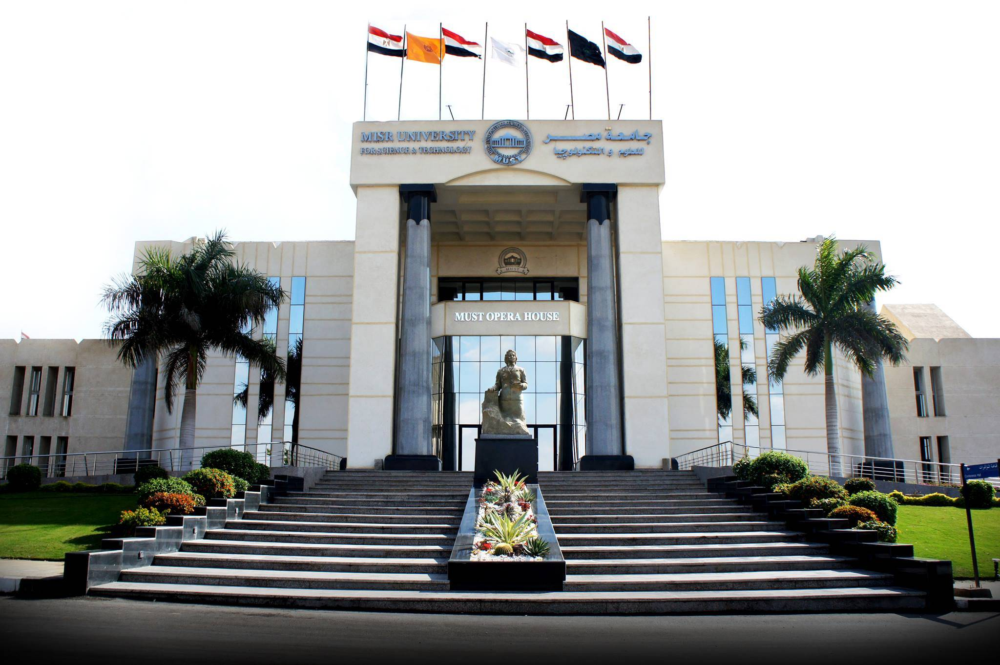

<div id="about" class="about">
  <div class="container-fluid">
     <div class="row d_flex">
        <div class="col-md-6">
           <div class="titlepage text_align_left">
              <h2>About Us</h2>
              <p style="text-align: justify;">MUST Opera House At MUST students tend to spend their leisure times doing beneficial activities. We mainly focus on arts as a soul feeding activity at our campus. MUST Opera House is considered the place where students are free to unleash their potentials in singing, acting, and playing musical instruments. Students are also free to join dancing activities and crafts making. MUST Opera House provides concerts, events, and shows. MUST Opera House hosts international and national ballet shows and choirs. The school of talents at MUST Opera House prepares today’s generations to become tomorrow’s artists. Moreover, there are different concerts that is supervised by Maestro Selim Sahab. The MUST Opera House is considered the first private opera house to be established in Egypt 2001. The Opera’s interior design is composed of an outstanding Concert Hall with a seating capacity of 1000 seating chairs, furthermore it will be used as a conference hall for the university.
                In addition, there is a wide reception area on each floor, a maze hall, and the activities room.
             </p>
              <a class="read_more" routerLink="/about-us" style="background-color: #002E5c;">Read More</a>
           </div>
        </div>
        <div class="col-md-6">
           <div class="about_img">
              <figure></figure>
           </div>
        </div>
     </div>
  </div>
</div>
